Nepal, officially the Federal Democratic Republic of Nepal, is a landlocked country in South Asia. It is
mainly situated in the Himalayas, but also includes parts of the Indo-Gangetic Plain. It borders the Tibet
Autonomous Region of China to the north, and India to the south, east, and west, while it is narrowly separated from
Bangladesh by the Siliguri Corridor, and from Bhutan by the Indian state of Sikkim. Nepal has a diverse geography,
including fertile plains, subalpine forested hills, and eight of the world's ten tallest mountains, including Mount
Everest, the highest point on Earth. Kathmandu is the nation's capital and its largest city. Nepal is a
multi-ethnic, multi-lingual, multi-religious, and multi-cultural state, with Nepali as the official language.
Culture
Nepal's culture is a vibrant blend of ethnic traditions, religious beliefs, and societal practices. It's shaped
byHinduism and Buddhism, with a rich tapestry of music, dance, art, and festivals that reflect this diverse
heritage.
Here's a deeper look at Nepal's culture:
1. Religion:
Hinduism: The majority of Nepalese people are Hindu, with a strong influence on daily life, customs, and festivals.
Buddhism: Buddhism, particularly Tibetan Buddhism, is also a significant religion, especially in the Himalayan
regions.
Other religions: Smaller communities practice Kiratism, Islam, and Christianity, further contributing to the
cultural diversity.
Bandipur is a charming hilltop town in Nepal known for its preserved Newari culture, traditional
architecture, and stunning mountain views. It offers a peaceful retreat with cobbled streets, vibrant
local
markets, and panoramic vistas of the Himalayas. A popular spot for cultural tourism and hiking.
This place is Bandipur, a picturesque hilltop town in Nepal. It is known for its traditional Newari
architecture, serene mountain views, and beautiful surroundings in the Himalayas. The sharp peak
visible in
the background is Mount Machapuchare (Fishtail), a famous mountain in the Annapurna range near Bandipur.
Namche Bazaar, famously known as the Sherpa capital of Nepal, is a must-visit destination for anyone
trekking through the Everest region.
Nestled at 3,440 meters in the heart of the Khumbu Valley, Namche is
more than just a stop point along
the Everest Base Camp trek trail—it is a thriving hub filled with vibrant
markets, colorful culture, and a spirit of adventure at every step. From jaw-dropping mountain views to a
melting pot of tradition and modernity, Namche offers a perfect blend of panoramic viewpoints, spiritual
landmarks, and warm Sherpa hospitality, making it one of the most fascinating destinations in Nepal.
Jomsom is situated in the Mustang District of Nepal. It is a hidden gem in the Himalayas. Known for its
unique landscape and tranquil atmosphere, this small town has become a popular stop for trekkers and
tourists exploring the Annapurna Circuit. Located at an altitude of around 2,700 meters, Jomsom nepal offers
stunning views of the Annapurna and Dhaulagiri mountain ranges. For those looking to explore nature and
culture, Jomsom is a perfect destination included in many Nepal tour packages.
The town has a fascinating blend of Tibetan culture and modern-day Nepalese traditions, making it a charming
place to visit. Jomsom serves as a base for those heading to the sacred Muktinath Temple, and it is also
famous for its apple orchards, which produce some of the best apples in Nepal.
Ghandruk Village, nestled in Nepal's Annapurna region, is a picturesque mountain getaway that blends
breathtaking landscapes with deep-rooted Gurung traditions. Perched at 2,012 meters, Ghandruk Village offers
awe-inspiring views of Annapurna South, Hiunchuli, and the striking Machapuchare (Fishtail Mountain). Just a
4-5 hour drive from Pokhara, this serene village welcomes travelers with its terraced fields, traditional
stone houses, and warm Gurung hospitality. The air is crisp, the trails are peaceful, and the sunrise over
the Himalayas is nothing short of magical. Whether you're trekking through rhododendron forests, exploring
the Gurung Museum, or simply relaxing in a cozy homestay with a bowl of dal bhat, Ghandruk Village captures
the heart of Nepal's natural beauty and cultural richness.
This place is Boudhanath, a picturesque hilltop town in Nepal. It is known for its traditional Newari
architecture, serene mountain views, and beautiful surroundings in the Himalayas. The sharp peak
visible in
the background is Mount Machapuchare (Fishtail), a famous mountain in the Annapurna range near Bandipur.
 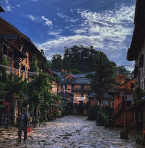
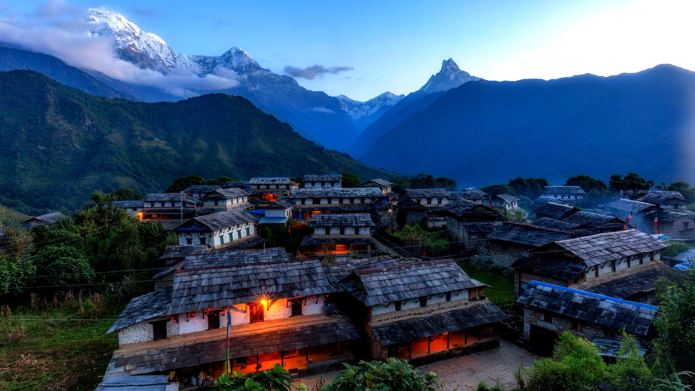
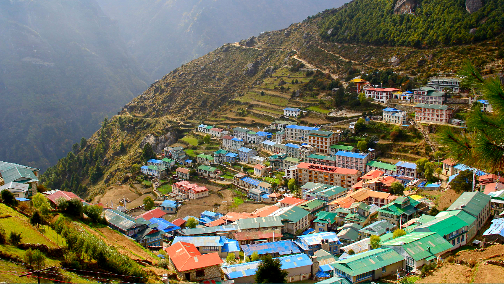
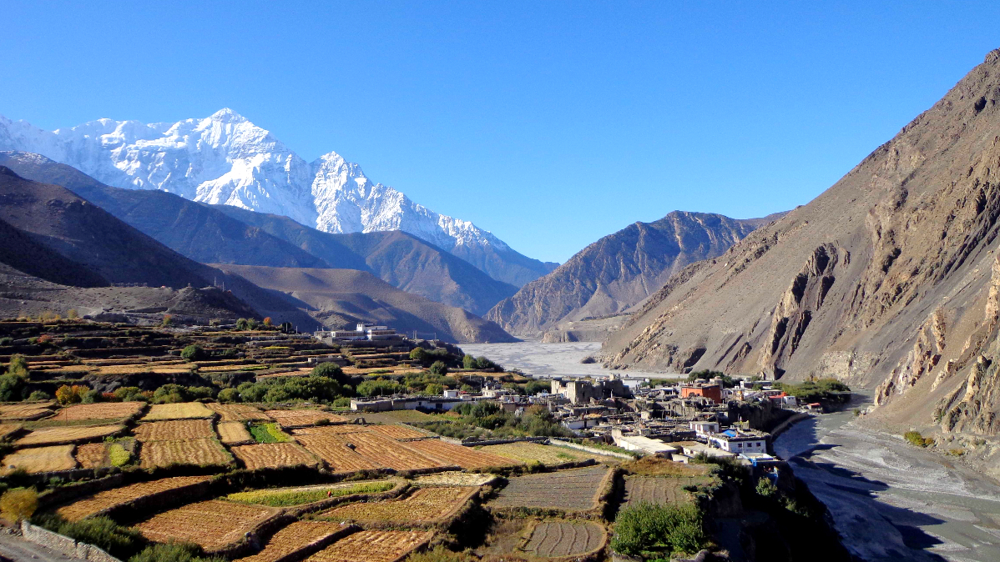
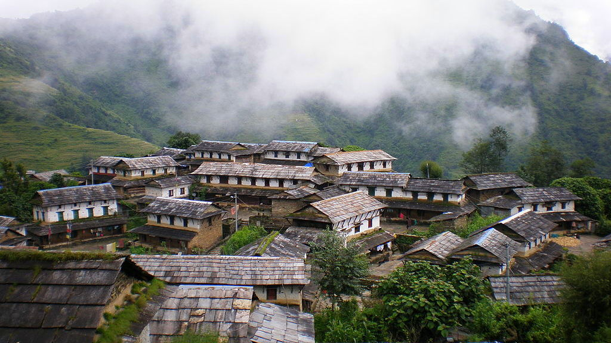
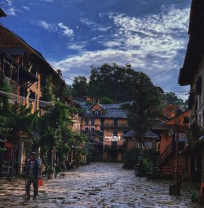
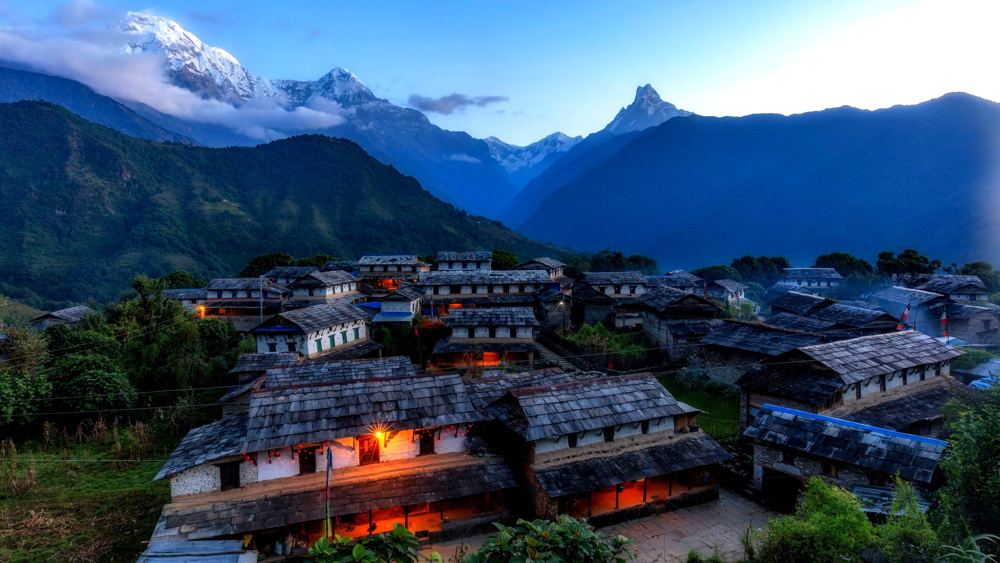
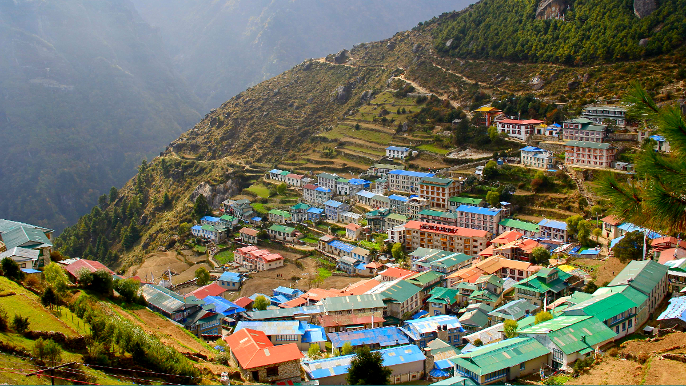
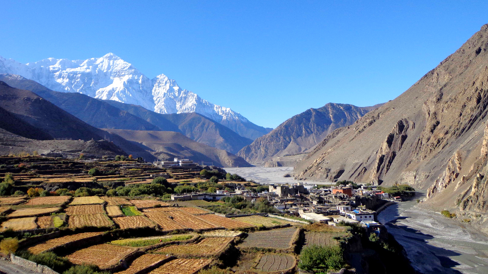
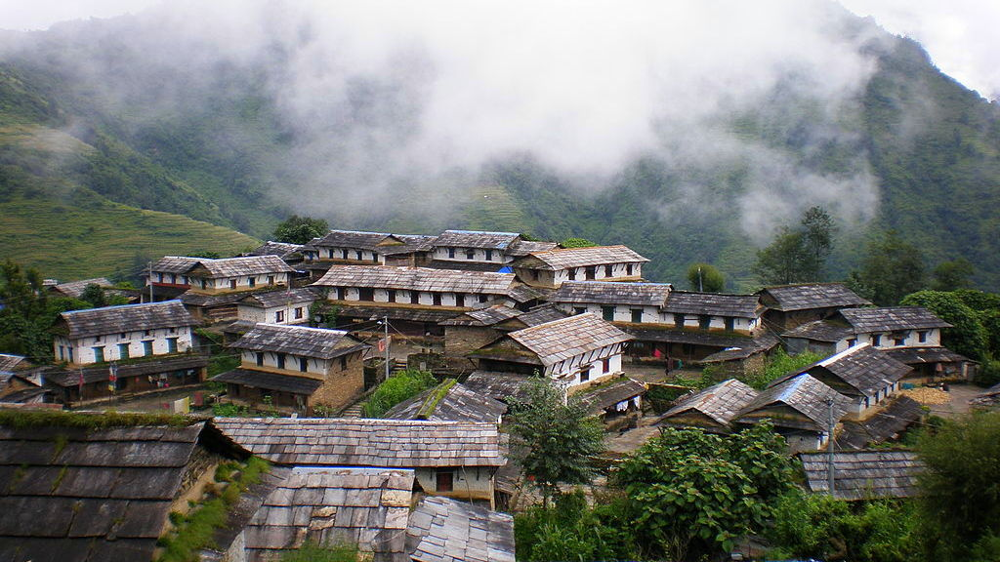

 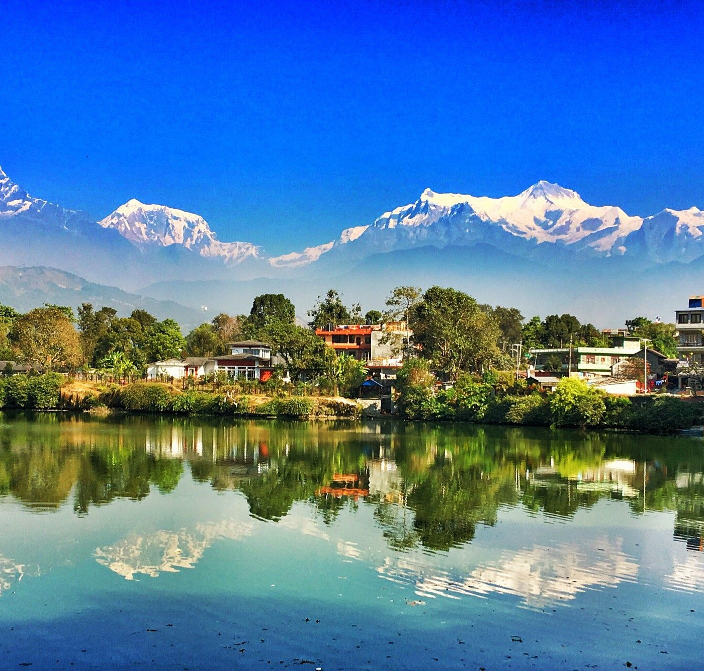
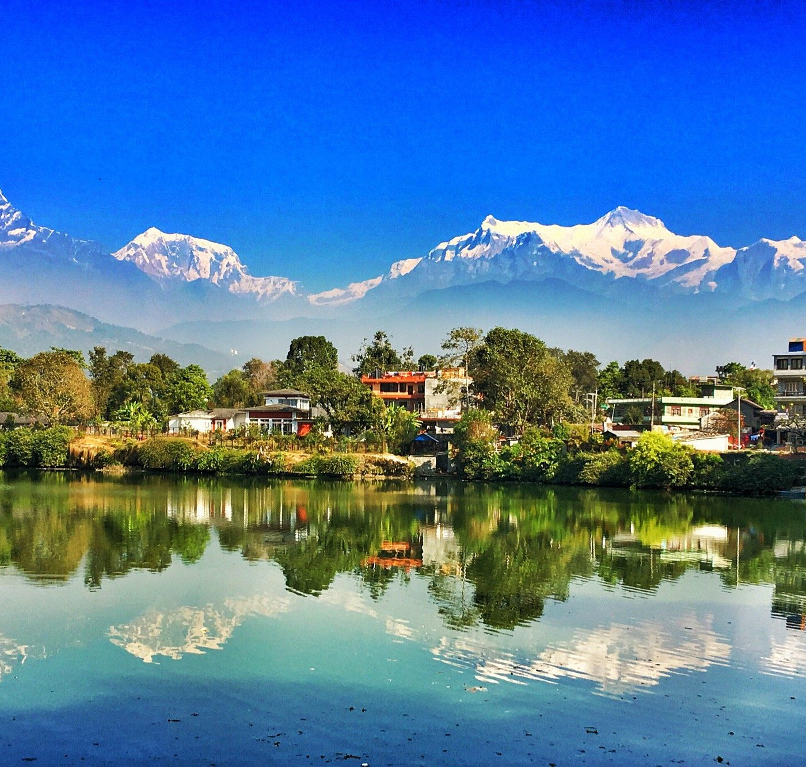